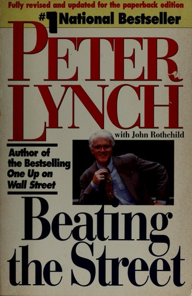

彼得·林奇（Peter Lynch）十岁时父亲去世，少年时代便在马萨诸塞州西牛顿的布雷本乡村俱乐部（Brae Burn Country Club）当球童。1965年，他从波士顿学院毕业；1968年取得宾夕法尼亚大学沃顿商学院MBA学位，翌年加入富达（Fidelity）任研究分析师。1977年，三十三岁的林奇接手资产约1800万美元的麦哲伦基金。到1990年退休时，基金规模已达到约140亿美元；十三年间年均回报率约29.2%。合著者约翰·罗斯柴尔德（John Rothchild）曾为《时代》《财富》等刊物撰稿，与林奇合作过三本书。《战胜华尔街》1993年由西蒙与舒斯特（Simon & Schuster）出版，是两人继《彼得·林奇的成功投资》之后的第二次合作。
全书开篇第一章题为"圣阿格尼丝的奇迹"：马萨诸塞州阿灵顿市圣阿格尼丝学校的一个七年级班级，在老师琼·莫里西（Joan Morrissey）带领下，分成"白手起家队""林奇帮"等小组，用虚拟的二十五万美元在1990年建起一个十四只股票的模拟组合，候选公司来自孩子们熟悉的沃尔玛、耐克、Gap等品牌。两年后，这个组合上涨约70%，跑赢标普500指数，也超过同期绝大多数股票型基金——沃尔玛涨了164.7%，耐克178.5%，Gap涨了320.3%。学生们总结的原则还包括至少研究五家公司再买一只股票，以及不因价格便宜就认定股票值得买。林奇借此提出他的"第三原则"："永远不要投资一个你没法用蜡笔画出来的想法。"书的中段是林奇回顾十三年管理麦哲伦基金的经历，他把它拆成三个规模阶段——从1800万美元到1亿美元、从1亿到10亿美元、再到140亿美元——说明资金增长怎样改变可买公司的范围、流动性要求和持仓数量。后半部分围绕1992年《巴伦周刊》圆桌会议展开：林奇当场推荐21只股票，逐一说明理由，并在书中检查半年后的结果。全书以"25条黄金法则"收尾。
中文版《战胜华尔街》由机械工业出版社引进。2010年版由刘建位、徐晓杰、李国平翻译，收入“华章经典·金融投资”系列；2018年典藏版由刘建位翻译。它与《彼得·林奇的成功投资》的分工很清楚：前一本建立个人投资者的观察框架，这一本集中展示林奇如何把观察变成公司研究、买入理由与组合管理。
林奇所说的“了解你买的东西”最终要落实为调研：观察门店、联系公司、核对财务数据，再写清楚股票上涨所依赖的那条故事。圣阿格尼丝的学生先从身边产品发现线索，却没有把“熟悉品牌”等同于“可以直接买入”；林奇对21只股票的复盘也让读者看到，最初判断必须接受后续结果检验。他逐项解释哪些判断已经兑现、哪些已经落空，以及新的公司事实是否改变原有故事。基金规模从1800万美元扩大到140亿美元之后，小公司仓位对业绩的影响自然下降，流动性与持仓数量反而成为约束。书中的21只推荐股只是1992年的候选清单，不能脱离当时价格照搬；更可复用的是为每只股票写下类别、买入理由、关键指标和退出条件，再按新信息修订。同一项盈利放缓，对稳定增长公司和快速增长公司的含义并不相同，这也是先分类再研究的用途。这样读，它记录的是研究流程、组合容量和事后复盘，而不是“个人投资者必然战胜专业人士”的承诺，两种结论不能混同。